Colours, type, layout and components that every page of the app is built from, with the rules for using them.
| Version | 2.2 — 18 October 2026 |
| Applies to | OxyPC Inventory Lifecycle web app (FastAPI + Jinja2 + Bootstrap 5) |
| Based on | Code on branch staging, static/css/app.css, static/js/global-table.js |
| Environments | Production http://10.199.206.109 · Staging http://localhost:8001 |
| Audience | Developers, reviewers and Claude sessions building or changing pages |
| What's new | v2.2: OxyPC × Bluemonk brand colours (success #0F7A37, Bluemonk Navy #0e3a7a), new Global Table style, OxyPC green app icon |
Every OxyPC Inventory Lifecycle page is assembled from the same few parts: summary tiles, a filter bar and a Global Table inside a card. This document records how each part looks and how it is built, so that new pages match the 238 templates already live.
The system sits on Bootstrap 5 with a thin shared layer in static/css/app.css. Table behaviour lives in static/js/global-table.js. All libraries are served locally from static/vendor/, with no CDN, so the app works on the office LAN without internet.
| Principle | What it means in practice |
|---|---|
| Reuse, don't restyle | Use the shared classes (filter-bar, initGlobalTable, the tile pattern). A fix in app.css then reaches every page at once. |
| Dense but readable | Tables use 14px text, one-line headers and two-line cell clamps, so 12+ rows fit on a 1366px office screen without wrapping. |
| Colour carries meaning | Each colour stands for a stage or state and is used the same way on tiles, badges and buttons. Colour is never decoration. |
| One row of controls | Filters and their buttons sit on one line above the table. Row actions sit in the last column, centred. |
| Permissions decide what shows | A control appears only for roles that may use it, checked with has_perm() or role_allowed(). Never a hard-coded role list. |
qa_docs/design_system/design_system.html; rebuild the PDF with build_pdf.py next to it.Four groups of colour: the brand colours and neutrals around every page (including the OxyPC greens), Bootstrap's semantic colours for actions and states, tile colours for summary counts, and fixed stage colours for device badges.
#0e3a7a --brand-blue#0377c2 --sidebar-active#d9ebf6 —#54BA48 --oxy-leaf#129042 --oxy-forest.profit-positive), icon front#E8F5E6 --oxy-mint#f0f4f8 --sidebar-text#212529 body text#D8D8D8 —Bootstrap 5 defaults, except Success (OxyPC green), plus three custom badge colours defined in app.css (teal, purple, pink).
#0d6efd primary#0F7A37 success#ffc107 warning#dc3545 danger#0dcaf0 info#6c757d secondary#212529 dark#0d9488 bg-teal#6f42c1 bg-purple#d63384 bg-pinkSummary tiles set one variable, --tc, and derive their tint, border, number and watermark from it. These are the shades in use. They are darker than Bootstrap's warning and info, which are too pale for coloured text on a light tint. Green tiles sit on mint #E8F5E6.
#0d6efd#0F7A37#fd7e14#f0ad00#0aa2c0#20c997#dc3545#e83e8c#6f42c1#6c757dFixed in STAGE_COLORS (models/device.py) and read through device.stage_color. Never choose a stage colour by hand.
#0F7A37 badge.| Class | Colour | Use |
|---|---|---|
.profit-positive | #129042 ₹12,450 | Profit, positive P&L (was #0f9e4e) |
.profit-negative | #d63031 −₹3,200 | Loss |
.profit-zero | #888 ₹0 | Break-even |
bg-* class that isn't in Bootstrap or app.css. The badge renders white text on no background.The app uses Segoe UI (Windows), falling back to Arial. The whole interface renders at 90% zoom, so the sizes below are what the CSS says, before that zoom.
| Role | Spec | Sample |
|---|---|---|
| Page title (top bar) | 1.25rem · bold · primary blue | Inventory Manager |
| Tile number | 1.6rem · 700 · tile colour | 3,518 |
| Card title | 1rem · semibold · navy | Inventory Stock |
| Body / table text | 14px · 400 | LOT-042 · Dell Latitude 5490 · i5 8th Gen |
| Table header | 0.8rem · 600 · uppercase · 0.5px tracking | Tag Number |
| Form label / sidebar link | 0.875rem | Device Type |
| Tile label | 0.72rem · #343a40 | Devices in Stock |
| Sidebar section | 0.7rem · 700 · uppercase · 1px tracking | INVENTORY |
| Barcode field | Courier New · 1rem | OXY-2026-004512 |
| Token | Value | Where |
|---|---|---|
| Card and tile radius | 10px | Cards, summary tiles, .stat-card |
| Table radius | 0.5em | Tables inside cards (clip-path on scroll tables) |
| Control radius | 6px | Inputs, DataTables search and length controls, sidebar links |
| Grid gap | g-3 = 1rem | Between tiles and cards |
| Below tile row | mb-4 = 1.5rem | Tiles → filter bar |
| Shadow | 0 .25rem .5rem rgba(0,0,0,.5) | .shadow-sm is overridden app-wide to this. Use the class, don't write your own |
| Cell padding | 8px (.5rem); first column 16px left NEW | Every Global Table, even when table-sm is set |
| Sidebar / top bar | 240px / 56px | --sidebar-width, --topbar-height |
| App zoom | 0.9 | --app-zoom. Use var(--full-vh) instead of 100vh |
Bootstrap Icons only, as <i class="bi bi-…">. Use me-1 before button text and me-2 before sidebar and card titles. Reuse the icon a module already has in the sidebar.
bi-archivebi-cpubi-clipboard-checkbi-box-seambi-toolsbi-bag-checkbi-funnelbi-file-earmark-arrow-downbi-uploadbi-pencilbi-trash3bi-check-circlebi-exclamation-trianglebi-upc-scanbi-person-workspacebi-arrow-left-right#54BA48, front #129042, side #0B6B30) with a delivery van on the lid, a laptop on the front and a white tick. static/img/logo.svg (dark rounded tile, browser-tab icon) and logo-mark.svg (no tile, login badge). The sidebar header is unchanged.Every page extends base.html, which provides the dark sidebar and white top bar. A page fills only its content block, plus head for page-specific CSS.
| # | Zone | Rule |
|---|---|---|
| 1 | Summary tiles | Optional. When present, always first, above any tabs. One row. |
| 2 | Filter bar | One line of filters, Filter/Reset on the right, Bluemonk Navy line underneath. |
| 3 | Alert | Only after a redirect with ?success= or ?error=. |
| 4 | Tabs | nav nav-tabs mb-3 when the page has several tables. A table inside a tab hides its own card header. |
| 5 | Table card | Sky Blue card header with icon + title and this table's own actions, then the Global Table. |
#129042 reading "Inventory Lifecycle"; link text #f0f4f8 (the page background); footer in Bluemonk Navy; active link #0377c2 (--sidebar-active). Green icons and badges in the sidebar use the same success green #0F7A37 as the rest of the app.bi-caret-left-fill / -right-fill) in Bluemonk Navy #0e3a7a, pale grey #c3cad3 when there is nowhere to go; no pill or background.has_perm(role,'<module>','enable') and not module_hidden('<module>'). Its text comes from sidebar_label(), so admins can rename it in Sidebar Config.page_title block and can be overridden in Page Title Config. Breadcrumbs are off by default and switched on per page there.Every summary tile in the app is one of five types, drawn by the macros in templates/_tiles.html. Types 1 and 2 come in two looks, tint and dark, each with or without a download button. A page picks one look and keeps it for all its tiles.
| # | Type | Macro | Looks |
|---|---|---|---|
| 1 | Single count | tl.single(count, label, colour, icon) | Tint or dark · download optional |
| 2 | Multi count | tl.multi(title, lines, colour, icon) | Tint or dark · download optional |
| 3 | Single count with secondary counts | tl.single(…, title=, secondary=[…]) | Tint or dark |
| 4 | Surface count | tl.surface(label, count, colour) | One look |
| 5 | Parent count | tl.parent(title, count, rows, excluded) | Light or dark |
(count, label) parts, or a dict with parts and a tooltip title. Used for the WorkID Status stage tiles, Parts Manager (New / Harvest) and the Ready for Sale tiles. It replaced the Double count tile.#0e3a7a). Dark (right, variant='dark'): the card filled with that colour, white text. Both have a small-caps title, a big total, a breakdown list (icon in a soft square, label, value) and a grey "Excluded" line in plain text with "|" separators. It sits at the left of a block of other tiles and stretches to their height. rows = [(icon, label, value, colour)], excluded = [(label, value)]. Used for the Dashboard's Total Inventory and Total Parts in Stock.| Part | Spec |
|---|---|
| Colour | One variable, --tc, set by the macro from its colour argument. Pick the colour from what the tile counts (chapter 02, Tile colours). |
| Tint look | Background 8% of the colour over white; 1px border at 25%; coloured count; dark label #343a40; shadow. |
| Dark look | Solid colour background and border; white count and title; label at 88% white; no shadow. |
| Box | Radius 10px · padding 1rem 1rem .8rem · min-height 96px · all tiles in a row stretch to the same height. |
| Text | Count 1.6rem, weight 700, one line, letter-spacing −1px · label .72rem, one line · title .8rem, weight 600 · secondary lines .75rem. |
| Large numbers NEW | Indian grouping (12,34,567). From 1 lakh up a count shows as x.xxx Lk, from 1 crore as x.xxx Cr (3 decimals); hovering shows the full figure. Jinja: tile_num(n) (the macros use it); JS: oxtShort(n, rupee). |
| Watermark | Optional Bootstrap icon, 3.4rem, bottom-right, partly cut off: 10% of the colour (tint) or 20% white (dark). |
| Download | download=URL adds a small outline button at the bottom (download_label, default "Download"). Pass None when the user lacks the Export permission. |
| Link | href= makes the whole tile a link; it lifts 3px on hover. |
| Row | <div class="oxt-row">: flex row, gap .75rem, tiles share the width (min 150px) and wrap. Surface tiles use oxt-row oxt-row-surface. |
| Page hooks | cls= extra classes and extra= raw attributes on the tile; count_attrs= / label_attrs= on the count and label (multi: a third item in each part). |
{% import "_tiles.html" as tl %}
<div class="oxt-row">
{{ tl.single(devices_in_iqc, 'Devices in IQC', '#2F6DB5', 'bi-clipboard-check') }}
{{ tl.single(pna, 'Total Tags in PNA', '#dc3545', 'bi-exclamation-triangle',
download=pna_url if can_export else None, download_label='Summary') }}
{{ tl.multi('Total Quantities', [[(qty_new, 'New')], [(qty_harvest, 'Harvest')]], '#0d6efd', 'bi-boxes') }}
</div>
Retired: lt-tile, pm-tile, hw-tile, prod-tile, inv-tile, dash-tile, part-tile, stat-card, sum-card and the Double count tile. The Dashboard stage pipeline stays its own component.
One set of filter fields for the whole app, used in the filter bar on a list page and in Global Card headers. Every field looks and behaves the same wherever it sits.
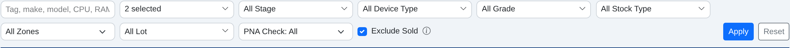
| Rule | Detail |
|---|---|
| Place | Below the tiles and above the table, on the page (no box), with a Bluemonk Navy rule underneath: <form method="get" class="filter-bar"><div class="filter-bar-row">… |
| Width | Fields stretch to share the row, max 200px each. A checkbox (filter-bar-check) keeps its natural width. A date range never goes below 175px. |
| Rows | Up to 8 filters: one row. 9 or more: 6 per row (automatic grid), Apply / Reset at the right of the first row. No class needed (filter-bar-6 is retired). |
| Buttons | Last cell: Apply (btn btn-primary btn-sm, no icon) and Reset (btn btn-outline-secondary btn-sm, a link to the page with no filters). |
| Applying | Nothing applies on its own. Filters apply only when Apply is pressed, or Enter in a text box. (Card-header filters are different: they apply at once.) |
| Labels | No label above a field: each has a title= tooltip and a placeholder or an "All …" first option. |
| Type | Look | Rules |
|---|---|---|
| 1 · Dropdown single choice | 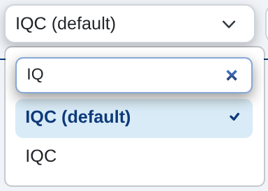 | A plain <select class="form-select form-select-sm">. With 4 or more items (counting "All …") it opens a menu with a search box (see below). The real select stays in the form, so the server and page scripts see no change. |
| 2 · Date range NEW | 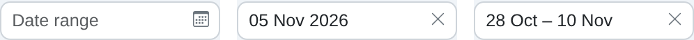 | One box replaces each From / To pair. Click one day = that day only; click two days = the range. × clears it. The two original inputs stay as hidden fields with the same names, so the server needs no change. A date box on its own uses the same box in single-day mode. |
| 3 · Multi-select | 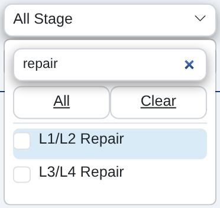 | {{ ms.multiselect(name, label, options, selected) }} from _multiselect_filter.html. Shows "2 selected"; All / Clear; search box with 4 or more options. Sends one comma-separated value. |
| 4 · Search box scan-ready | 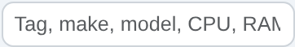 | Text box in filter-bar-search. Type, or scan a barcode (a scanner types and presses Enter, which applies). Same font as the other fields, never monospace. |
| 5 · Checkbox | 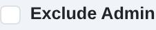 | In filter-bar-check. Label normal weight, same font, size and colour as the fields. |
data-no-search.| Picked | Shows |
|---|---|
| One day | 05 Nov 2026 |
| Range this year | 01 – 08 Nov · 28 Oct – 08 Nov |
| Range, other year | 01 – 09 Mar 25 |
| Across two years | 28.12.25 – 08.01.26 |
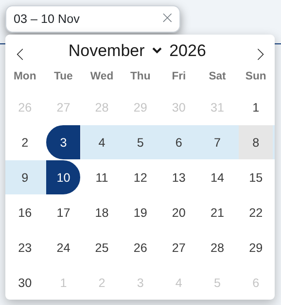
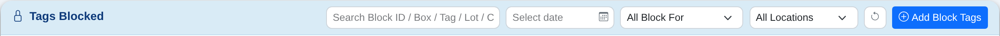
| Part | Spec (filter bar and card header) |
|---|---|
| Box | White · 1px #ced4da border · 31px high · 8px corners · padding .25rem .5rem |
| Text | App font (never monospace) · 14px · weight 400 · #212529 · placeholder 60% · text vertically centred |
| Menus | Open below the field, as wide as it, max 260–280px tall, scrolling with the search box fixed at the top |
| Building a page | Write plain <select>, <input type="date"> pairs and the multiselect macro; the shared script turns them into the global fields. Don't auto-submit a filter bar, style a field by hand, add labels above fields, or build your own date picker or searchable dropdown. |
| Files | static/js/filter-fields.js (date range, search, card-header rules) · static/vendor/flatpickr (calendar, MIT) · templates/_multiselect_filter.html · templates/_date_range_fields.html · CSS in app.css (.filter-bar, .dr-*, .ss-*, .ms-*) |
Three containers used together: the Global Card holds content, the Global Table lists records, Global Tabs switch between views. A table card is a Global Card with a Global Table inside.
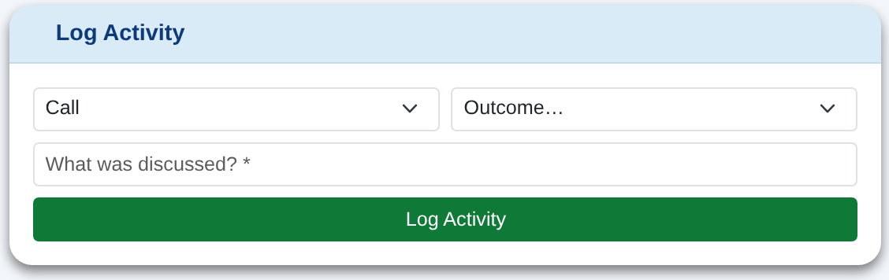
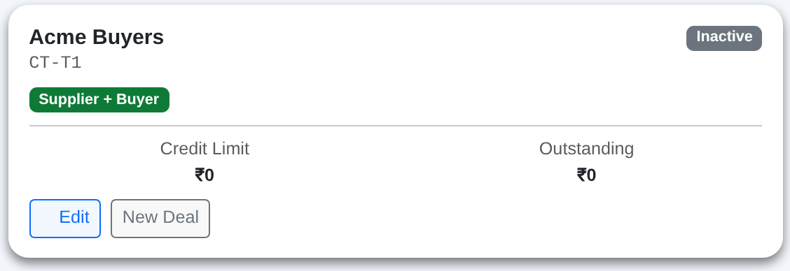
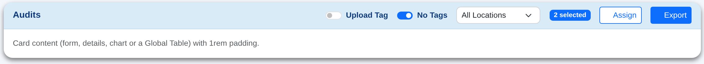
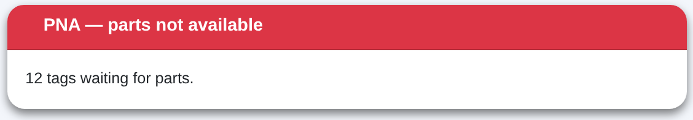
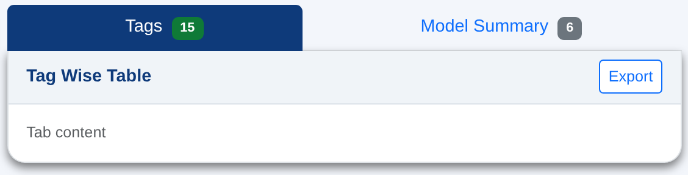
| Part | Spec |
|---|---|
| Box | card border-0 shadow-sm · 16px corners · shadow 0 .25rem .5rem rgba(0,0,0,.5) · white body, padding 1rem |
| Header | A header with no colour of its own (none, bg-transparent, bg-white, bg-light) turns Sky Blue #d9ebf6 with a navy semi-bold title, padding .5rem 1rem. Coloured headers that carry meaning (e.g. red PNA) keep their colour. card-plain opts out. |
| Header content | Left: icon + title. Right: this card's filters (chapter 06) and buttons (chapter 08). Badges and switches are centred on the row. |
| Under tabs | First card in a tab pane: square top corners, header Light Colour #f0f4f8. A bordered tab content gets 16px bottom corners and the card shadow; the card inside has none. |
| Table inside | The table has 12px rounded corners top and bottom and no extra gap below it. |
initGlobalTable('#id', dtOptions, opts) wraps a server-side DataTable with the shared look and behaviour. Never hand-build a list table.
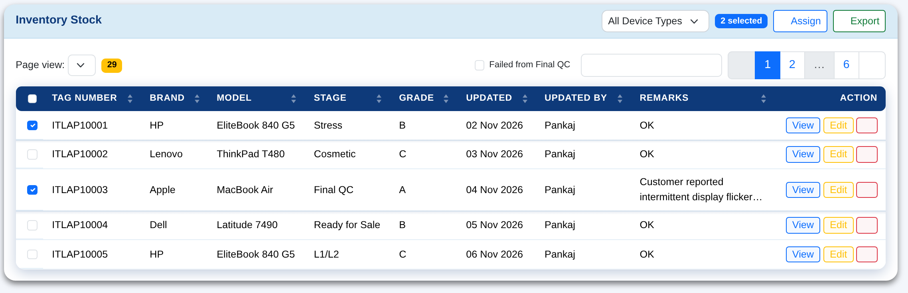
| Always on | Detail |
|---|---|
| Look | Navy #0e3a7a header row, white uppercase labels on one line, rounded ends; white rows with a thin #e3eef7 divider; soft navy shadow |
| Columns | First column frozen when scrolling sideways (first two with a checkbox). The checkbox column is not sortable. Action column right-aligned, all buttons on one line. |
| Text | 14px; cells stay on one line; 32+ characters clamp to 2 lines with the full value on hover |
| Toolbar | Left: "Page view" + yellow row-count badge. Right: search box + pagination. 12 rows per page. Built-in empty-state picture. |
| Toolbar filters | Checkbox filters sit just before the search box: square box, .4rem gap before the label |
| Setting (per table) | Options |
|---|---|
| Checkbox selection | Off · On (opts.selectAll): checkbox column first with Select All; Tag Number fixed with it |
| Search box | "Search" · "Scan or Search" (opts.scan): scanning a tag ticks its row |
| Placement (automatic) | In a card · in main tabs · in sub-tabs · without a card. Same padding everywhere; in a tab without a card body it adds its own. |
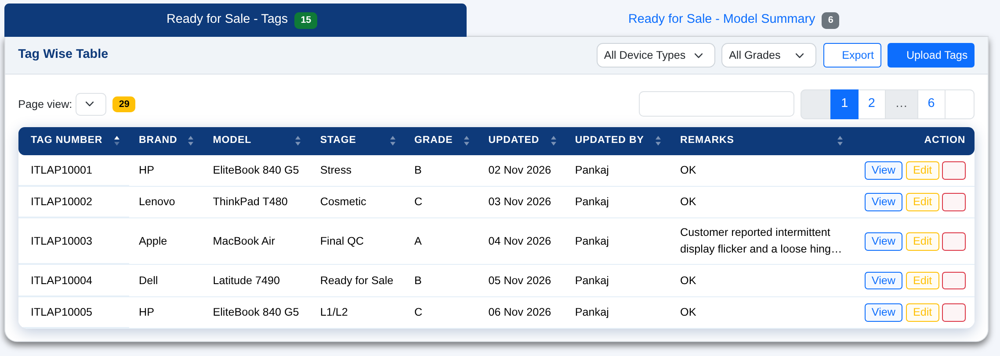
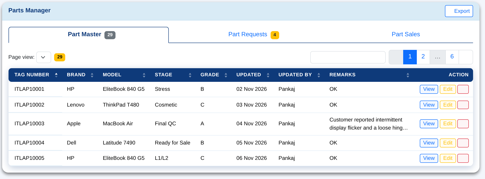
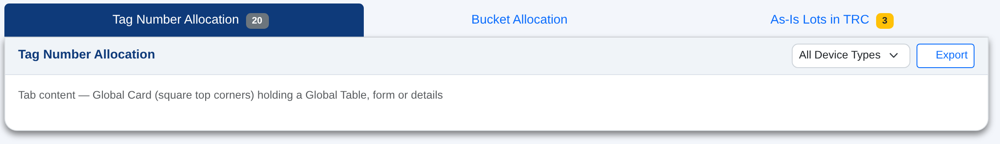
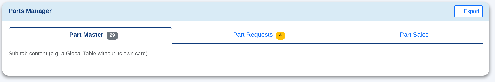
.main-tabs forces filled, .sub-tabs forces outline.A compact tab row that sits on the card-header line, next to the card's title. Use it when one card's table has a few views — the page decides; nothing applies it on its own.
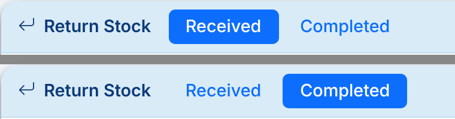
| Part | Rule |
|---|---|
| Markup | <ul class="nav pill-tabs"> with .nav-link buttons; the current one has .active. Put it right after the card title in the card header. |
| Active | Solid Primary pill (--bs-primary), white text, standard rounded corners. |
| Others | Plain Primary text — no box, border or underline. Hover: a faint Primary tint. |
| Size | Padding .25rem 1rem, weight 500 — no taller than the header's buttons, so the header keeps its height. |
| Labels | Short words; no count badges and no icons. |
| Pill tabs | Global Tabs (main / sub) | |
|---|---|---|
| Switches | Views of one card's table (a filter): Received / Completed, Pending / Done | Between different panels or tables |
| Sits | Inside the card header, after the title | Full-width bar above a card, or inside a card body |
| Counts | None | Optional count badge after the label |
| Class | .nav.pill-tabs | .nav-tabs (.main-tabs / .sub-tabs) |
| Use | Class | Examples |
|---|---|---|
| Main action | btn btn-primary | Add …, Save, Apply |
| Positive step | btn btn-success (#0F7A37) | Pass, Move to Ready, Approve, Sell |
| Export NEW | btn btn-outline-primary on white, icon bi-download | Export, Export (61), Export GRN Summary. Always outline. |
| Supporting actions | btn btn-outline-primary on white | Customise, Login Log, Bulk Upload |
| Cancel / filter-bar Reset | btn btn-outline-secondary | Cancel, Back, Reset |
| Destructive | btn-danger / btn-outline-danger | Delete, Fail, Scrap. Always confirm first, with the count. |
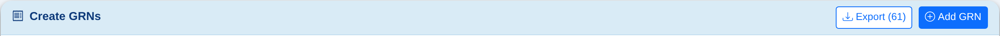
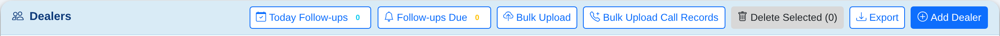
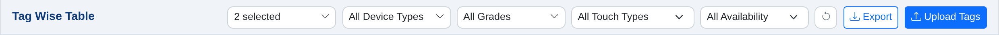
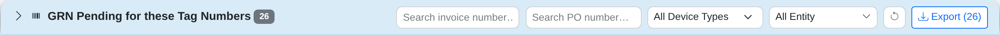
| Rule | Detail |
|---|---|
| Primary | Only an Add button is primary (solid blue), and it sits at the far right. With no Add button, an Upload or Backup button is primary. Otherwise no button is primary. At most one primary per header. |
| Other buttons | Blue outline on white (btn-outline-primary bg-white). Red (Delete …) stays red outline. On / off toggles (Split Entity) keep their own look. |
| Export | Always outline, icon bi-download. |
| Reset | Grey icon-only (), 31px square, right after the last filter (chapter 06). No Filter / Apply button in a card header. |
| Automatic | Applied by filter-fields.js to every plain card header. Opt out: data-hdr-keep on the card-header (Dashboard's Financial Summary). Coloured headers are left alone. |
Every add button, in page and card headers, says Add … (never "New …" or "Add New …") and uses the circled plus icon: <i class="bi bi-plus-circle me-1"></i>Add Deal.
btn-sm everywhere except the submit button at the bottom of a full form.me-1. Icon-only buttons need title=.#D8D8D8 with dark text. Don't restyle it.| Badge | Rule |
|---|---|
| Stage | badge bg-{{ device.stage_color }} + stage_label; never chosen by hand |
| Status | Done/active green #0F7A37 · pending yellow with text-dark · failed red · inactive grey |
| Counts | Notification: badge rounded-pill bg-danger · row count: yellow toolbar badge from the Global Table, not repeated in the card header |
form-label (0.875rem) above each field; required fields marked <span class="text-danger">*</span>.row g-3, col-md-4), grouped in cards by topic. -sm sizes inside filter bars, tables and modals.barcode-field (Bluemonk Navy focus ring) and get focus on page load for scanners. The login page is the exception: no field auto-focuses.server-side-financial-snapshot).All modals use the same frame: a white modal-header with an h5.modal-title (icon + title) and a close button, a modal-body, and a modal-footer with Cancel on the left of the main button.
| Part | Rule |
|---|---|
| Size | Default (500px) for most forms · modal-sm for one field or a short confirmation · modal-lg for tables and long forms · add modal-dialog-scrollable when content can grow, modal-dialog-centered for confirmations |
| Header | White. <h5 class="modal-title"> with a Bootstrap icon and me-2, then btn-close. The title names the action ("Assign Bucket"), not the page |
| Tinted header | Only to signal the type: bg-primary bg-opacity-10 informational · bg-warning bg-opacity-10 caution · bg-danger bg-opacity-10 + modal-title text-danger destructive or defect |
| Body — fields | Context line first (small text-muted, e.g. "3 tag(s) selected"). Labels form-label small fw-semibold, required * in text-danger. Controls -sm; two short fields side by side in row g-2 |
| Body — no fields | Summary rows: label text-muted small + value in <strong>, so the user sees exactly what will happen before confirming |
| Errors | An alert alert-danger small at the top of the body, hidden (d-none) until the server returns an error. The modal stays open, the fields keep their values, the button is re-enabled. Mark the bad field is-invalid with invalid-feedback |
| Footer | Cancel btn btn-outline-secondary (data-bs-dismiss="modal") left of the main btn btn-primary with icon. A secondary destructive action sits far left with me-auto. Informational modals have one OK/Close button |
| Behaviour | Disable the main button while saving. On success, close the modal and refresh the table (ajax-partial-refresh) or redirect with ?success= |
?success= or ?error=; the page shows a dismissible alert above its content.alert-warning for what the user must know before acting; alert-info for neutral guidance. One sentence, with the number.py-2; add .alert-dismissible.py-2 .btn-close { padding: .75rem 1rem; } to app.css to centre the ×.<main> and the page scrolls to it.alert alert-info alert-dismissible small mb-3. Bold summary line with every count, then one line per problem group with the tags in font-monospace.Bulk Lot, Device (IQC) and Spare Parts uploads save valid rows, skip and list bad ones, and review duplicates.
| Part | Rule |
|---|---|
| Count alerts | Two side by side (col-md-6), not dismissible: rows inserted in alert-success; rows with errors in alert-warning if any, else alert-success. |
| Error table | table table-sm table-bordered small, table-warning header, columns # and Error. Each message starts Row N: and names the field and bad value. |
| Actions | Back to List (btn-primary), Upload Another File (btn-outline-secondary). |
| Duplicate review | Opens by itself for repeated Tag Numbers or unknown lots. modal-xl, static backdrop; Update All and Skip and Submit left of the close button. Row actions are small outline buttons: Approve Move (primary), Update (warning), Add Lot (success). |
A control the user can't use is hidden, not disabled. A control they can use must always render, including for custom roles that admins create (for example trc_manager).
| Need | Use |
|---|---|
| Module, sidebar link, section | has_perm(role,'<module>','enable') + not module_hidden('<module>'); any_perm() for a section header |
| Role-specific button | role_allowed(current_user.role, 'admin', 'sales_manager'). It mirrors the server's require_roles() and lets custom roles through |
| Server side | Always re-checked with require_roles and verify_csrf. Hiding is for clarity, not security |
{% if role_allowed(current_user.role,
'admin', 'sales_manager') %}
<button class="btn btn-success btn-sm">
Approve</button>
{% endif %}
current_user.role.value in ['admin','sales_manager']. Custom roles silently lose the button while the server would allow them.When an action should refresh only a table or the tiles (for example a bulk assign in a modal):
X-Requested-With: XMLHttpRequest, and still redirects otherwise.fetch() + FormData, closes the modal, then calls dt.ajax.reload(null, false) (keeps the current page) or swaps the region by ID with DOMParser.fetch, the normal form submit still works.page_title.| ✓ | Check |
|---|---|
| ☐ | Extends base.html; sets title and page_title; sidebar link gated by has_perm with a sidebar_label |
| ☐ | Order: tiles → filter bar → alert → tabs → table card |
| ☐ | Tiles use the light-tint spec, with colours from the tile palette |
| ☐ | Filters use filter-bar: one row, -sm controls, title= instead of labels, Filter/Reset on the right |
| ☐ | Table uses initGlobalTable in a card with icon + title; actions in the last column |
| ☐ | Buttons follow the hierarchy; destructive ones confirm with a count |
| ☐ | Stage badges use stage_color; no unknown bg-* classes |
| ☐ | Greens use the OxyPC tokens (success #0F7A37), never Bootstrap's old #198754 |
| ☐ | Role checks use role_allowed() / has_perm(), never a hard-coded list |
| ☐ | Works at 1366px; wide tables scroll inside the card |
| ☐ | No CDN links; any new library goes in static/vendor/ |
| # | Step | What happens |
|---|---|---|
| 1 | Database approval | A new table or column is drafted as .dbml and approved in dbdiagram.io before it is built. |
| 2 | Build and verify | Templates must parse. Run skill verify-feature; run regression-sweep if base.html, app.css, a macro or a Jinja global changed. |
| 3 | Staging | Changes go to the staging branch. Staging machines (Windows RUN_STAGING.bat, Mac START_STAGING.command) load it at http://localhost:8001; check with Ctrl+F5. |
| 4 | Approval | Pushed only after an explicit "push" for that batch. An earlier yes never carries over (commit-deploy-gate). |
| 5 | Production | Merge to GitHub main (Bluemonk123/oxypc-inventory). Production at http://10.199.206.109 updates within 2–5 minutes. |
| 6 | Keep this document current | Edit qa_docs/design_system/design_system.html in the same change and rebuild the PDF. |
The app has two global menus. The mega menu is the top bar's +: every Add action a user may do, in sections. The simple menu is every other dropdown of links or actions, such as the profile menu. Filter dropdowns are a third, separate standard (chapter 06).
| Menu | Used for | Look |
|---|---|---|
| Mega menu | Top-bar + (Quick Add) | Sections with blue headings and a line under each; several columns, filled top to bottom; first column under the button, more columns open to the left |
| Simple menu | Profile menu, row action menus, export / download menus — any .dropdown-menu of .dropdown-items | One column, roomy rows, rounded light-blue hover, icons in a fixed column, dividers between groups |
| Filter dropdown | Single / multi select in filter bars and card headers | WorkID look: search box, All / Clear links, checkboxes (chapter 06) |
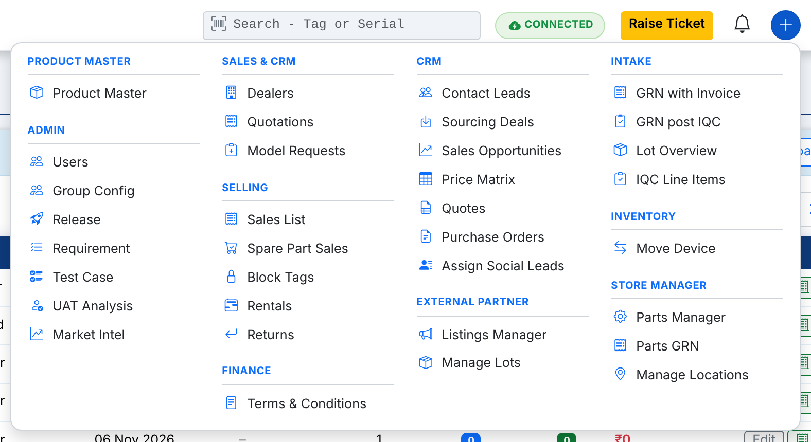
| Part | Rule |
|---|---|
| Button | Blue circle (btn btn-primary rounded-circle, 32 px, bi-plus-lg) right of the bell. Hidden when the user has nothing to add. |
| Which items | An item shows only when the role may open the module (Permission Matrix enable, module not hidden) and may add in it — can(user, module, 'add'), the same check as the page's own Add button (Price Matrix uses pricing_add). List: services/quick_add.py. |
| Names and sections | Taken from the sidebar in the browser: each item's label, icon and section are its sidebar link's, in sidebar order. Renaming a sidebar item (Sidebar Config) renames it here. Items with no sidebar link of their own keep their label and join the section of the link given in SIDE. |
| Columns | Whole sections go top to bottom, up to 10 rows per column (a heading counts as a row), then the next column; at most 4 columns, then columns get taller. A section never splits; a section longer than a column gets its own column. Column 1 is on the right, under the button (flex-direction: row-reverse). No vertical dividers. |
| Section heading | 0.7rem, bold, upper case, letter-spacing .04em, Primary blue (same as the item icons), 1px line under it. |
| Spacing | Every section has the same 8 px above and below. Items 0.875rem, padding .38rem .6rem, radius 6px, icon in Primary blue, light-blue hover. |
| Opening an item | An item with its own page goes there (/lots/new). An item whose Add is a modal on a list page links to /page#add=<button text>; static/js/quick-add.js clicks that Add button once the page has loaded and removes the hash. |
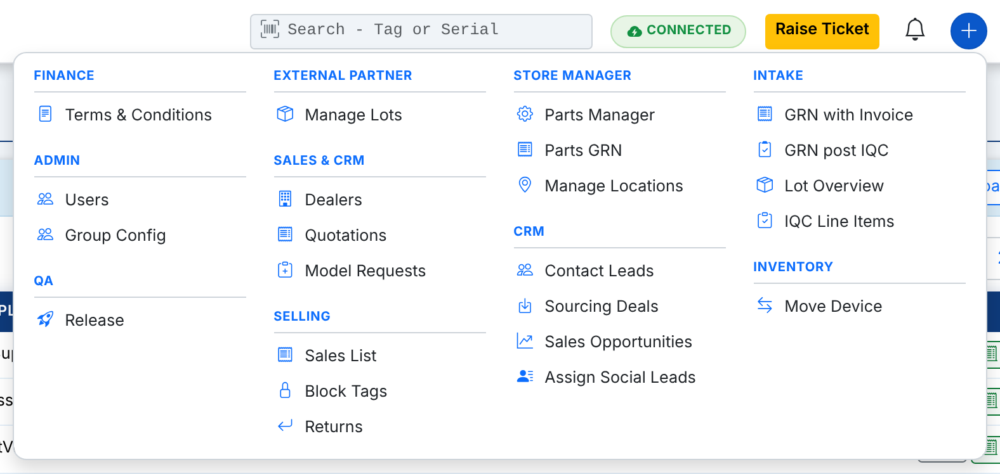
CATALOG in services/quick_add.py: (label, icon, url, module, action). The label and group are only fallbacks — the sidebar provides the real ones./page#add=Add Thing with the button's exact text. If the list page is not url minus /new, add it to SIDE.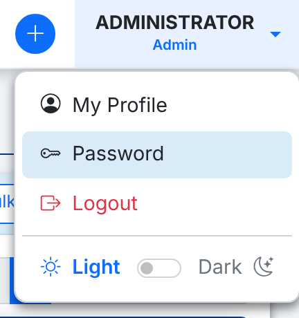
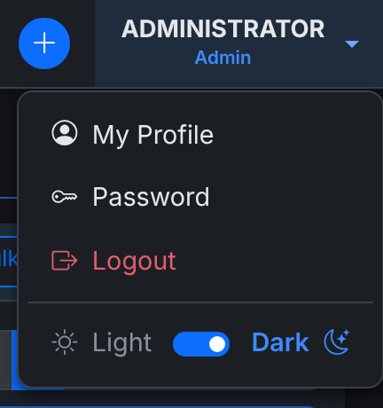
| Part | Rule |
|---|---|
| Menu | Radius 10px, border --oxy-border, 0.35rem side padding, min-width 12rem. |
| Items | Padding .5rem .85rem, radius 6px, 2px between rows. Icon first, fixed 1.15rem wide, then me-2 — every label starts at the same place. |
| Hover | Sky Blue --oxy-sky (dark mode: --oxy-hover). A text-danger item (Logout, Delete) gets a light red hover. |
| Groups | dropdown-divider between groups, .4rem above and below. Destructive items last. |
| How | Global — Bootstrap's --bs-dropdown-* variables set on .dropdown-menu in app.css. Write plain Bootstrap markup; no extra classes. |
/auth/profile#password at the Reset Password card), Logout; then a divider and the Light ⟷ Dark switch as the footer.oxy_theme cookie; the admin sets the default in Master Data → System Colors.app.css :root) UPDATED| Variable | Value | Purpose |
|---|---|---|
--sidebar-width | 240px | Sidebar width |
--sidebar-text | #f0f4f8 | Sidebar link text (same as page background) |
--sidebar-active | #0377c2 | Active sidebar link |
--brand-blue | #0e3a7a | History buttons, focus, brand (was #0377c2) |
--oxy-leaf / --oxy-forest | #54BA48 / #129042 | OxyPC greens: accents / profit |
--oxy-text / --bs-success | #0F7A37 | Success: buttons, badges, green text, tiles |
--oxy-mint | #E8F5E6 | Green tile / stat-card background |
--topbar-height | 56px | Top bar height |
--app-zoom | 0.9 | Global UI scale |
--full-vh | calc(100vh / var(--app-zoom)) | Use instead of 100vh |
| Class | What it does |
|---|---|
filter-bar, filter-bar-row, filter-bar-search, filter-bar-check, filter-bar-6 | Filter bar layout |
gtable, gtable-card, gtable-top, gtable-cards | Global Table (added by initGlobalTable); gtable-cards = Bluemonk Navy header, row shadows |
gtable-last-col-text | Last column is text: left-aligned and wraps |
gtable-clamp2 | Two-line clamp with tooltip, 160–260px wide |
bg-teal, bg-purple, bg-pink | Custom badge colours |
barcode-field | Monospace scan input with Bluemonk Navy focus ring |
card-hover | Lift-on-hover for clickable KPI cards |
profit-positive / -negative / -zero | P&L colours (#129042 / #d63031 / #888) |
prod-tile*, inv-tile*, pm-tile* | Page-level tile classes (light-tint, light-tint, solid) |
| Global | Use |
|---|---|
has_perm(role, module, action) | Module permission check |
any_perm(role, *modules) | Show a section if any module is allowed |
role_allowed(role, *roles) | Role check that is safe for custom roles |
module_hidden(key) | Master Data global visibility |
sidebar_label(key, default) | Admin-renamable sidebar text |
resolve_page_title(path), breadcrumb_enabled(path) | Page Title Config |
app_version() | Version shown on the login page and sidebar footer |
| Path | Contents |
|---|---|
templates/base.html | Sidebar, top bar, alerts, breadcrumbs, script includes |
static/css/app.css | All shared overrides, colour tokens |
static/js/global-table.js | initGlobalTable |
static/img/logo.svg, logo-mark.svg | App icon (browser tab, login badge) |
static/vendor/ | Bootstrap 5, Bootstrap Icons, DataTables, Chart.js (local copies) |
templates_config.py | Jinja globals, asset versioning |
models/device.py | STAGE_COLORS |
qa_docs/design_system/ | This document's source (design_system.html) and PDF builder |
.claude/skills/ | Project workflows: verify-feature, regression-sweep, commit-deploy-gate, custom-role-permissions, ajax-partial-refresh |